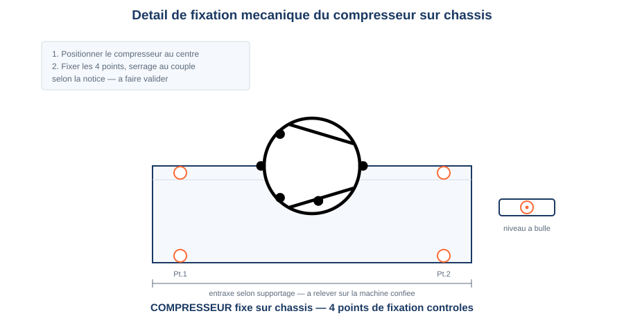

Thème / DomaineMise en place mécanique — chantier de remise en état (A1)
Module atelier A1 · 4 hMise en place mécanique — implanter, tracer, percer, fixer
SéquenceS10 · sem. 2 · 08/09/2026 (matin)
Nom________________
Prénom________________
Date________________
Positionnement01234
Mise en situation professionnelle
Votre entreprise poursuit le chantier de remise en état de l'atelier. Ordre d'intervention
n° OI-2026-S10-02 : le devis est accepté. Le client demande la remise en place mécanique complète
des organes sur le châssis, avant tout raccordement fluidique ou électrique. Vous travaillez en
binôme, en 2 jalons successifs : jalon 1 traçage et perçage des points de fixation du
châssis, jalon 2 fixation des supportages, pose du compresseur et des organes lourds, découverte du
pressostat au banc. Aucun branchement, aucune mise sous tension aujourd'hui — uniquement de la
mécanique.

Détail de fixation à respecter — les valeurs de couple sont données par votre professeur selon la notice de la machine.
Tâches
T11 Contrôler les circuits hors fonctionnement T14 Régler l'installation en fonctionnement
Savoirs
S5.6 Réseaux, matériels électriques et de régulation augmenté S6.1 Santé et sécurité au travail augmenté
Savoir-être
Rigueur du geste de fixation · EPI sans rappel · soin du poste
Compétences (≤ 4)
ConfortementC3.3 Implanter, fixer les supportages ConfortementC4.6 Régler les valeurs de consigne
Objectifs — je serai capable de…
implanter les organes sur le châssis à partir d'un plan coté, sans les fixer d'abord ;
tracer et percer les points de fixation en respectant les règles de sécurité du perçage ;
fixer mécaniquement le compresseur, l'évaporateur et les pressostats, avec un serrage contrôlé ;
manipuler et pré-régler un pressostat au banc, hors tension et hors fluide.
Prérequis — je sais déjà…
le diagnostic de ma machine établi au module A0 (relire ma fiche de diagnostic) ;
nommer les 4 organes de la Croix du Frigoriste ;
porter les EPI de l'atelier sans qu'on me le rappelle ;
lire une cote (mesure en mm) sur un plan simple.
Si vous ne cochez pas tous ces prérequis, prévenez le professeur avant de commencer : un rappel court est possible pendant l'exercice au fil de l'eau.
Matériel
Châssis de la machine diagnostiquée au module A0 (× 1 par binôme)
Plan d'implantation coté du châssis (× 1 par binôme, voir annexe)
Compresseur et évaporateur de la machine (à poser, non raccordés) (× 1 jeu)
2 pressostats (HP et BP, ou combiné) — objets de manipulation avant pose (× 1 jeu)
Perceuse électroportative + forets adaptés au support (consommable : forets)
Pointeau et marteau (pour amorcer le perçage)
Visserie et supportages de fixation (consommable)
Niveau à bulle (× 1 par poste)
Clé dynamométrique ou clé plate adaptée aux organes (serrage contrôlé, sans forcer)
Lunettes de protection anti-perçage (× 1 par élève)
Gants de manutention (× 1 par élève)
Fiche de pose (ce document) + crayon
Consignes de sécurité
Risque
Parade
Manutention de charges (compresseur, évaporateur, châssis)
Méthode PRAP : dos droit, jambes fléchies, charge portée près du corps ; demander de l'aide à deux pour toute charge lourde.
Perçage (projections, coincement du foret, mèche qui accroche)
Lunettes de protection obligatoires, cheveux attachés. Jamais de perçage sans lunettes. Pointer avant de percer, tenir la perceuse fermement à deux mains.
Coupures (arêtes de tôle du châssis, chutes de perçage)
Gants de manutention lors de la manipulation du châssis ; ébavurer les trous percés avant de continuer.
Serrage excessif ou organe monté à l'envers
Ne jamais forcer un organe au serrage. Respecter le couple indiqué sur la fiche de pose ; vérifier le sens de montage avant de serrer définitivement.
Mise sous tension ou sous fluide accidentelle
Interdiction formelle de brancher électriquement ou de raccorder fluidiquement un organe cette semaine. La machine reste hors tension et hors fluide toute la journée.
Avant de commencer, complétez la fiche de sécurité à cocher ci-dessous
(tâches du jour, risques, EPI portés) et faites-la viser par le professeur.
Fiche de sécurité à cocher — document CAP, F. Henninot.
🚨 En cas d'incident — couper l'alimentation électrique générale du poste
(arrêt d'urgence), alerter immédiatement le professeur, ne jamais déplacer un élève blessé sans certitude
sur son état. Trousse de secours et arrêt d'urgence localisés en salle, poste indiqué par le professeur en
début de séance.
Le professeur vous fait circuler un pressostat démonté. Observez-le avant de
répondre : ne le branchez jamais.
Observation 1 — Regardez l'extérieur du pressostat. Combien voyez-vous
de vis ou de molettes de réglage sur le dessus ? À votre avis, à quoi peuvent-elles servir ?
Observation 2 — Cherchez une plage de valeurs inscrite sur l'appareil
(chiffres, échelle graduée). Que représentent ces chiffres selon vous ?
Le pressostat est un interrupteur piloté par la pression : quand la
pression atteint une valeur réglée (la consigne), il ouvre ou ferme un contact électrique. Il sert soit
à la régulation (arrêter ou démarrer la machine automatiquement), soit à la sécurité (couper la
machine en cas de pression anormale). Deux organes de réglage principaux : une vis ou molette de consigne
(la valeur de déclenchement visée) et une vis ou molette de différentiel (l'écart avant réenclenchement).
Aujourd'hui, vous le manipulez au banc, hors fonctionnement : la machine n'est ni sous tension, ni sous
fluide. Vous ne faites que découvrir l'objet et vous entraîner à pré-régler une valeur.
Question — Pourquoi, à votre avis, un pressostat ne se règle-t-il
jamais directement sur la machine, sous tension et sous fluide, la première fois ?
Plan d'implantation coté du châssis
Voici le schéma de principe de l'implantation attendue sur votre châssis. Les
repères correspondent aux 3 organes à fixer cette semaine :
1 = compresseur, 2 = évaporateur, 3 = pressostat(s). Le schéma complet et coté figure
en annexe pleine page en fin de document : c'est celui-ci qu'il faut garder sous les yeux pendant le
traçage.
Schéma de principe de l'implantation — croquis technique, F. Henninot. Repères : 1 compresseur · 2 évaporateur · 3 pressostat(s). Les points orange marquent les points de fixation à tracer puis percer.
Jalon 1 — Traçage et perçage des points de fixation du châssis
JALON 1 — ≈ 1 h
À partir du plan d'implantation (annexe pleine page), implantez, tracez et
percez tous les points de fixation du châssis. Cochez chaque étape réalisée.
☐ 1. Implanter les organes sur le châssis à partir du plan coté, sans les fixer d'abord
☐ 2. Reporter les cotes du plan d'implantation sur le châssis (mètre, réglet, crayon)
☐ 3. Vérifier l'équerrage et l'alignement avant de marquer définitivement
☐ 4. Mettre les lunettes de protection — jamais de perçage sans lunettes
☐ 5. Pointer chaque point de perçage au pointeau et au marteau (amorce du foret)
☐ 6. Percer chaque point avec le foret adapté au support, en tenant la perceuse fermement à deux mains
☐ 7. Ébavurer chaque trou percé (chute d'aluminium ou de tôle : jeter dans le bac approprié)
☐ 8. Positionner chaque supportage sans le fixer, vérifier qu'il correspond au plan
Tableau de contrôle de perçage — jalon 1
Point de fixation
Diamètre perçage (mm)
Pointé avant perçage ?
Ébavuré ?
Conforme ?
Support châssis n° 1
☐ Oui ☐ Non
☐ Oui ☐ Non
☐ Oui ☐ Non
Support châssis n° 2
☐ Oui ☐ Non
☐ Oui ☐ Non
☐ Oui ☐ Non
Support châssis n° 3
☐ Oui ☐ Non
☐ Oui ☐ Non
☐ Oui ☐ Non
Support châssis n° 4
☐ Oui ☐ Non
☐ Oui ☐ Non
☐ Oui ☐ Non
Le diamètre de perçage dépend de la visserie utilisée : demandez la valeur au professeur avant de percer (selon le supportage, à faire valider).
Question — Pourquoi pointe-t-on toujours un trou avant de percer, plutôt que de percer directement ?
Jalon 2 — Fixation des supportages, pose du compresseur et des organes lourds
JALON 2 — ≈ 45 min
Fixez les supportages percés au jalon 1, puis positionnez et fixez mécaniquement
le compresseur et l'évaporateur. Aucun raccordement fluidique ni électrique aujourd'hui.
☐ 1. Fixer chaque supportage avec un serrage contrôlé — ne jamais forcer
☐ 2. Contrôler l'aplomb et le niveau de chaque supportage au niveau à bulle
☐ 3. Vérifier le poids du compresseur avant de le soulever (demander de l'aide si nécessaire)
☐ 4. Manutentionner selon la méthode PRAP : dos droit, jambes fléchies, charge près du corps
☐ 5. Positionner le compresseur sur ses points de fixation (repère 1 du plan), sans serrer
☐ 6. Vérifier le sens de montage de l'organe (orientation des raccords, sens indiqué par le constructeur)
☐ 7. Fixer le compresseur avec un serrage contrôlé, en croix si plusieurs vis — ne jamais forcer
☐ 8. Contrôler l'aplomb et le niveau du compresseur
☐ 9. Positionner et fixer l'évaporateur sur ses points de fixation (repère 2 du plan), même méthode
Tableau de contrôle de fixation — jalon 2 (organes)
Organe
Nombre de points de fixation
Serrage réalisé
Aplomb / niveau
Conforme ?
Compresseur
☐ Oui ☐ Non
☐ Oui ☐ Non
Évaporateur
☐ Oui ☐ Non
☐ Oui ☐ Non
Question — Que risque-t-on si un compresseur est fixé sans contrôle d'aplomb ni de niveau, avant même d'être mis en fonctionnement ?
Jalon 2 (suite) — Découverte et pré-réglage du pressostat au banc
La machine n'est ni sous tension, ni sous fluide. Vous manipulez un
pressostat seul, posé sur le banc, pour découvrir ses organes de réglage et vous entraîner à pré-régler
une valeur de consigne, pendant que votre binôme termine la fixation des organes lourds.
☐ 1. Identifier la vis ou molette de consigne (souvent repérée « RANGE » ou « SET »)
☐ 2. Identifier la vis ou molette de différentiel (souvent repérée « DIFF »)
☐ 3. Repérer la plage de valeurs inscrite sur l'appareil (échelle graduée)
☐ 4. Pré-régler une valeur de consigne indiquée par le professeur, sans forcer sur les curseurs
☐ 5. Vérifier la valeur affichée après réglage (aiguille ou repère face à la graduation)
☐ 6. Noter la valeur pré-réglée dans le tableau ci-dessous
☐ 7. Fixer mécaniquement le pressostat à son emplacement sur le châssis (repère 3 du plan), sans le raccorder
Tableau de contrôle — pressostat
Grandeur
Valeur demandée par le professeur
Valeur pré-réglée relevée
Conforme ?
Consigne (bar)
☐ Oui ☐ Non
Différentiel (bar)
☐ Oui ☐ Non
Fixation mécanique du pressostat
—
☐ Réalisée ☐ Non réalisée
☐ Oui ☐ Non
La valeur de consigne dépend de la machine et de sa notice constructeur (préréglage au banc, hors tension) : elle est donnée par le professeur pour cet exercice de découverte, à faire valider avant tout montage définitif.
Question — Vous avez pré-réglé une valeur au banc, hors tension et hors fluide. Pourquoi ce pré-réglage n'est-il qu'une première étape, et pas un réglage définitif ?
Question — À votre avis, que se passerait-il si l'on montait le pressostat à l'envers (entrée et sortie inversées) sur le circuit ?
Cadre de dessin — plan d'implantation coté
Reportez ici, en schéma technique coté, l'implantation réelle des 3 organes
sur votre châssis (comme le schéma de la feuille 2, mais avec vos propres cotes en mm). Indiquez les repères
1 compresseur, 2 évaporateur, 3 pressostat(s), et les cotes de distance entre chaque
point de fixation.
Plan d'implantation coté — repères 1 (compresseur), 2 (évaporateur), 3 (pressostat) + cotes en mm
Bilan du module — jalons de pose
Jalons franchis aujourd'hui
☐ Jalon 1 réalisé — traçage, perçage des points de fixation du châssis contrôlés
☐ Jalon 2 réalisé — supportages, compresseur et évaporateur fixés, aplomb et niveau contrôlés
☐ Pressostat découvert, valeur pré-réglée, fixation mécanique faite
☐ Aucun raccordement fluidique ni électrique effectué (vérifié)
Visa professeur : ________________ Heure : ________________
Plan d'implantation complet du châssis — vue de face cotée
⚠ À imprimer en A3 PAYSAGE (une feuille par binôme) : c'est le document à garder sous les yeux pendant tout le traçage. La version réduite en feuille 2 sert au repérage, celle-ci sert au travail.